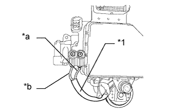

DTC C1252 Ненормально большая продолжительность работы электродвигателя насоса усилителя тормозной системы |
| Код DTC | Условие обнаружения DTC | Неисправный участок |
| C1252 | Электродвигатель работает в течение не менее 3 мин. |
|
| 1.ПРОВЕРЬТЕ РАБОТУ ЭЛЕКТРОДВИГАТЕЛЯ НАСОСА |
Выключите зажигание.
Нажмите на педаль тормоза более 40 раз.
Включите зажигание (IG).
Проверьте, как работает электродвигатель насоса.
| Результат | Следующий шаг |
| Электродвигатель насоса не работает | А |
| Электродвигатель насоса работает непрерывно и не останавливается | B |
| Электродвигатель насоса работает прерывисто | C |
| Электродвигатель насоса работает, а затем останавливается | D |
|
| ||||
|
| ||||
|
| ||||
| А | |
| 2.ПРОВЕРЬТЕ СОЕДИНЕНИЕ ЖГУТА ПРОВОДОВ ЭЛЕКТРОДВИГАТЕЛЯ НАСОСА |
Снимите гидравлический усилитель тормозной системы в сборе (для моделей с левосторонним рулевым управлением Нажмите здесь, для моделей с правосторонним рулевым управлением: Нажмите здесь).
Проверьте момент затяжки 2 винтов, которые крепят жгут проводов, соединяющий электромагнитный клапан главного цилиндра и усилитель тормозной системы с насосом гидроаккумулятора в сборе (для моделей с левосторонним рулевым управлением Нажмите здесь, для моделей с правосторонним рулевым управлением: Нажмите здесь).
|
| ||||
| OK | |
| 3.ПРОВЕРЬТЕ СОПРОТИВЛЕНИЕ ЖГУТА ПРОВОДОВ ЭЛЕКТРОДВИГАТЕЛЯ НАСОСА |
С помощью отвертки выверните 2 винта и снимите жгут проводов с электромагнитного клапана главного цилиндра.
|  |
Измерьте сопротивление в соответствии со значениями, приведенными в таблице ниже.
| Контакты для подключения диагностического прибора | Условие | Заданные условия |
| Контакт красного провода - контакт черного провода | Всегда | Менее 2 Ом |
| *1 | Жгут проводов электродвигателя насоса |
| *a | Красный провод |
| *b | Черный провод |
|
| ||||
| OK | |
| 4.СНИМИТЕ ПОКАЗАНИЯ ПОРТАТИВНОГО ДИАГНОСТИЧЕСКОГО ПРИБОРА (ДАТЧИК ДАВЛЕНИЯ В ГИДРОАККУМУЛЯТОРЕ) |
Выключите зажигание.
Подсоедините портативный диагностический прибор к DLC3.
Включите зажигание (IG).
Включите портативный диагностический прибор.
Войдите в следующие меню: Chassis / ABS/VSC/TRC / Data List.
| Информация на дисплее прибора | Измеряемая величина / диапазон измерения | Нормальное состояние | Замечание по диагностике |
| Accumulator Sensor | Показания датчика давления в гидроаккумуляторе/ мин.: 0,00 В, макс.: 5,00 В | 3,58–5 В | Если значение остается постоянным, независимо от работы насоса, возможна неисправность датчика давления в гидроаккумуляторе. |
Проверьте выходное значение гидроаккумулятора.
| Результат | Следующий шаг |
| Выходное значение находится в диапазоне "нормального состояния" | А |
| Выходное значение находится вне диапазона "нормального состояния" | B |
| Выходное значение остается постоянным независимо от работы насоса. | C |
|
| ||||
|
| ||||
| А | |
| 5.СНОВА ПРОВЕРЬТЕ DTC |
Сбросьте коды DTC (Нажмите здесь).
Выключите зажигание.
Включите зажигание (IG).
Подождите более 5 мин.
Проверьте, выводится ли тот же DTC (Нажмите здесь).
| Результат | Следующий шаг |
| DTC выводится | А |
| DTC не выводится | B |
|
| ||||
| А | ||
| ||